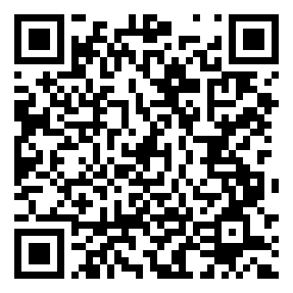

数据平权 · AI 下乡
需求渠道问卷
我们想做
真正解决工友难题
的软件，需要您指路。
您是工友本人，或您能接触到工友——都欢迎。
直接的、间接的，都是渠道。

扫码在线填
飞书表单
Q1
您的身份
（单选）
工友本人
能牵线的人（工头 / 组织者 / 社工 / 志愿者）
同行
同路人
其他：
Q2
您能对接、或自己属于哪类工友？
（按人在生产关系里的位置分，可多选）
一产（农林牧渔 / 村医）
二产（建筑 / 电子厂 / 装修）
服务业新蓝领（骑手 / 快递 / 网约车 / 家政）
个体经营（夫妻店 / 小摊 / 回收）
过渡 · 失业 · 待业（返乡 / 工伤 / NEET）
无偿再生产（全职妈妈 / 照顾者）
低级白领（码农 / 运营 / 文员）
其他：
Q3
您或工友们，最头疼的数字化难题是什么？
（越具体越好：什么场景、卡在哪一步）
Q4
所在城市 / 区域
（方便我们就近对接，选填）
Q5
您愿意
（可多选）
帮忙牵线引荐
当第一批试用
只是聊聊
保持关注
Q6
联系方式
（选填，怎么找到您）
微信：
电话：
码成工
一个为工友敲键盘的组织
隐私：
信息只用于产品调研与联系，绝不出售、不外传；想删随时说。